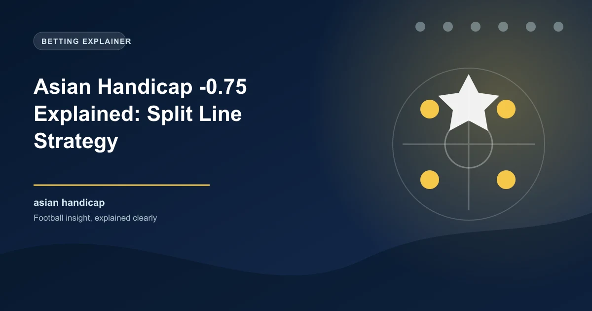

Asian Handicap -0.75 Explained: Split Ball Strategy Guide

The Asian Handicap -0.75 (also written as -3/4 or minus three-quarters) is one of the most versatile handicap lines in football betting. It sits between the -0.5 and -1.0 handicaps, offering a unique split outcome where your stake is divided across two lines. This gives you partial protection when the favourite wins by just one goal.
In this complete guide, we explain exactly how the -0.75 handicap works, walk through real examples, compare it to other handicap lines, and show you when to use it for maximum value.
How Asian Handicap -0.75 Works
When you bet on a team at -0.75 Asian Handicap, your stake is split equally across two handicap lines:
- Half your stake is placed at -0.5
- Half your stake is placed at -1.0
This means your bet can result in four possible outcomes: full win, half win, half loss, or full loss.
| Result | -0.5 Half | -1.0 Half | Overall Outcome |
|---|---|---|---|
| Team wins by 2+ goals | Win | Win | Full Win |
| Team wins by exactly 1 goal | Win | Lose (void/push) | Half Win |
| Match is a draw | Lose | Lose | Full Loss |
| Team loses | Lose | Lose | Full Loss |
Match: Manchester City -0.75 vs West Ham @ 1.85
Stake: $100 (split as $50 at -0.5 and $50 at -1.0)
Scenario 1: City wins 3-1 (2-goal margin)
-0.5 half: $50 x 1.85 = $92.50 profit
-1.0 half: $50 x 1.85 = $92.50 profit
Total return: $185 profit (full win)
Scenario 2: City wins 2-1 (1-goal margin)
-0.5 half: $50 x 1.85 = $92.50 profit
-1.0 half: $50 refunded (push)
Total return: $92.50 profit (half win)
Scenario 3: Match ends 1-1 (draw)
-0.5 half: $50 lost
-1.0 half: $50 lost
Total return: -$100 (full loss)
Why -0.75 Is Unique Among Handicap Lines
The -0.75 line occupies a strategic sweet spot between the more common -0.5 and -1.0 lines. Here is how they compare:
| Handicap | Win by 1 Goal | Win by 2+ Goals | Draw/Loss | Best When |
|---|---|---|---|---|
| -0.5 | Full Win | Full Win | Full Loss | Confident in a win by any margin |
| -0.75 | Half Win | Full Win | Full Loss | Expect a win but uncertain about margin |
| -1.0 | Push (refund) | Full Win | Full Loss | Expect win by 2+ but want push protection |
| -1.5 | Full Loss | Full Win | Full Loss | Confident in a comfortable win |
When to Use Asian Handicap -0.75
The -0.75 line is most effective in specific match situations. Here are the key scenarios:
1. Strong Home Favourite vs Mid-Table Opponent
When a top team at home faces a mid-table side, the favourite is expected to win but not necessarily by a large margin. The -0.75 line captures this perfectly: you get good odds while maintaining a safety net for a narrow win.
2. When -0.5 Odds Are Too Short
If the -0.5 handicap is priced at 1.40 or lower, the odds do not offer enough value. Moving to -0.75 typically pushes the odds to 1.75-1.90, which is a much better risk-reward ratio.
3. When You Expect Goals But Not a Blowout
If you expect the favourite to win 2-1 or 3-2 rather than 4-0, the -0.75 line gives you profit protection for the narrow win while still rewarding you fully if the margin is larger.
4. Away Favourites in Competitive Leagues
Away wins are harder to predict. The -0.75 handicap on an away favourite gives you partial protection if they win by just one goal away from home.
The -0.75 Decision Framework
Use -0.75 when:
- You believe the favourite will win, but are not confident about a 2+ goal margin
- The -0.5 odds are too short (below 1.50) and the -1.0 odds are too risky
- The favourite has a history of winning by 1 goal in similar fixtures
- The underdog has some attacking quality and is likely to score
-0.75 vs -0.5: Which Should You Choose?
This is one of the most common handicap betting decisions. Here is a practical comparison:
| Factor | -0.5 Handicap | -0.75 Handicap |
|---|---|---|
| Typical Odds | 1.50 - 1.70 | 1.80 - 2.00 |
| 1-Goal Win Result | Full Win | Half Win |
| Risk Level | Lower (any win works) | Medium (need 2+ for full win) |
| Value | Lower (shorter odds) | Higher (better odds for similar probability) |
| Best For | Clear favourites | Close matches with a slight edge |
In general, -0.75 offers better value than -0.5 for most matches because the odds improvement outweighs the half-win risk. Unless you are extremely confident the favourite will win by any margin, -0.75 is the smarter play.
-0.75 vs -1.0: Which Should You Choose?
The -1.0 line offers a push (refund) for a 1-goal win, while -0.75 offers a half-win for the same outcome. Here is when to use each:
Match: Real Madrid vs Real Sociedad
Option A: Real Madrid -0.75 @ 1.85
Option B: Real Madrid -1.0 @ 2.10
If Real Madrid wins 2-1:
Option A: Half win (profit on half stake)
Option B: Push (full refund)
If Real Madrid wins 3-1:
Option A: Full win
Option B: Full win
Verdict: If you think Real Madrid will win but might only win by 1, choose -0.75. If you are confident they will win by 2+, choose -1.0 for the higher odds.
The Mathematics of Half Wins and Half Losses
Understanding how the split stake affects your profit is crucial for bankroll management:
| Outcome | Calculation | Net Result (on $100 stake) |
|---|---|---|
| Full Win (2+ goals) | $100 x odds | +profit on full stake |
| Half Win (1 goal) | $50 x odds - $50 | Small profit (approx +35-40%) |
| Half Loss (rare) | $50 refunded, $50 lost | -50% of stake |
| Full Loss (draw/loss) | -$100 | -100% of stake |
Pro Tip: The Half Win Profit Margin
When you hit a half win on -0.75 at odds of 1.85, your profit is approximately $42.50 on a $100 stake (half stake wins at 1.85 = $92.50 profit on $50, minus $50 lost on the other half). This is a 42.5% return on your total stake — which is excellent for what is essentially a "partial correct" prediction.
-0.75 in Accumulators
The -0.75 handicap works well in accumulators because the odds are typically in the 1.80-2.00 range — high enough to boost your acca return but not so high that the risk is extreme.
- Use -0.75 selections as the "safe" legs in your acca (alongside Double Chance or Over 1.5 goals picks).
- Combine 3-4 -0.75 selections for combined odds of 5.00-8.00.
- Focus on home favourites at -0.75 for the highest hit rate.
- Avoid -0.75 away favourites in accas — the risk is higher and the push protection does not help in accumulators.
Common Mistakes to Avoid
If you are confident the favourite will win by any margin, take the -0.5 at shorter odds. The extra protection of -0.75 is not needed when you are certain of a win.
While rare, there are situations where the split stake can result in a half loss (e.g., if the bookmaker voids one half due to a player not taking part). Always check the specific bookmaker's rules for Asian Handicap markets.
In matches where both teams are defensively solid and the total goals market is Under 2.5, the -0.75 handicap is risky. A 1-0 win gives you only a half win, and a 0-0 draw is a full loss. Save -0.75 for matches where goals are expected.
Find Today's Best Handicap Picks
Our AI-powered predictions analyse handicap lines across all major leagues. Get data-driven picks for today's Asian Handicap markets including -0.75 value bets.
View Today's Predictions →